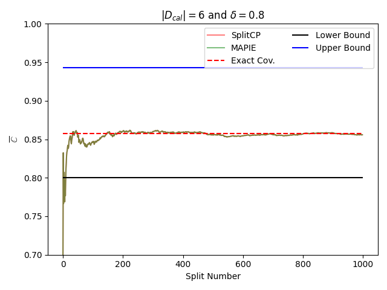
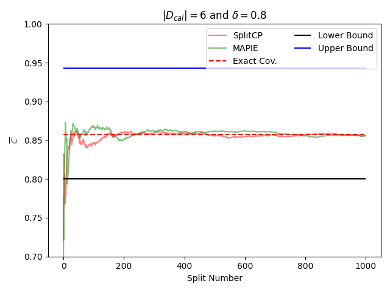
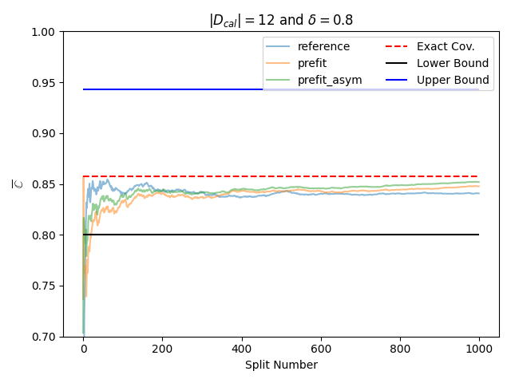
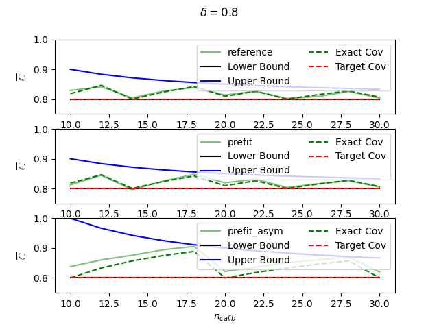

Note
Click here to download the full example code
Coverage validity for regression tasks¶
This example verifies that conformal claims are valid in the MAPIE package when using the CP prefit/split methods.
This notebook is inspired from the notebook used for episode "Uncertainty Quantification: Avoid these Missteps in Validating Your Conformal Claims!" (link to the orginal notebook).
For more details on theoretical guarantees:
[1] Vovk, Vladimir, Alexander Gammerman, and Glenn Shafer. "Algorithmic Learning in a Random World." Springer Nature, 2022.
[2] Angelopoulos, Anastasios N., and Stephen Bates. "Conformal prediction: A gentle introduction." Foundations and Trends® in Machine Learning 16.4 (2023): 494-591.
import warnings
import matplotlib.pyplot as plt
import numpy as np
from joblib import Parallel, delayed
from sklearn.datasets import make_regression
from sklearn.model_selection import train_test_split
from sklearn.tree import DecisionTreeRegressor
from mapie.conformity_scores import AbsoluteConformityScore
from mapie.metrics.regression import regression_coverage_score
from mapie.regression import SplitConformalRegressor
warnings.filterwarnings("ignore")
warnings.simplefilter("ignore", RuntimeWarning)
warnings.simplefilter("ignore", UserWarning)
Section 1: Comparison with the split conformalizer method (light version)¶
We propose here to implement a lighter version of split CP by calculating the quantile with a small correction according to [1]. We prepare the fit/conformalize/test routine in order to calculate the average coverage over several simulations.
# Conformalizer Class
class StandardConformalizer:
def __init__(self, pre_trained_model, non_conformity_func, confidence_level):
# Initialize the conformalizer with required parameters
self.estimator = pre_trained_model
self.non_conformity_func = non_conformity_func
self.confidence_level = confidence_level
def _calculate_quantile(self, scores_conformalize):
# Calculate the quantile value based on delta and non-conformity scores
self.delta_cor = (
np.ceil(self.confidence_level * (self.n_conformalize + 1))
/ self.n_conformalize
)
return np.quantile(scores_conformalize, self.delta_cor, method="lower")
def _conformalize(self, X_conformalize, y_conformalize):
# Calibrate the conformalizer to calculate q_hat
y_conformalize_pred = self.estimator.predict(X_conformalize)
scores_conformalize = self.non_conformity_func(
y_conformalize_pred, y_conformalize
)
self.q_hat = self._calculate_quantile(scores_conformalize)
def fit(self, X, y):
# Fit the conformalizer to the data and calculate q_hat
self.n_conformalize = X.shape[0]
self._conformalize(X, y)
return self
def predict(self, X):
# Returns the predicted interval
y_pred = self.estimator.predict(X)
y_lower, y_upper = y_pred - self.q_hat, y_pred + self.q_hat
y_pis = np.expand_dims(np.stack([y_lower, y_upper], axis=1), axis=-1)
return y_lower, y_pis
def non_conformity_func(y, y_hat):
return np.abs(y - y_hat)
def get_coverage_prefit(conformalizer, data, target, n_conformalize, random_state=None):
"""
Calculate the fraction of test samples within the predicted intervals.
This function splits the data into a conformalize set and a test set, and fits the
regressor to the conformalize set. It then predicts intervals for the test
set and calculates the fraction of test samples within these intervals.
Parameters:
-----------
conformalizer: object
A mapie regressor object.
data: array-like of shape (n_samples, n_features)
The data to be split into a train set and a test set.
target: array-like of shape (n_samples,)
The target values for the data.
n_conformalize: int
The length of the conformalize set.
random_state: int
Random state for the data splits.
Returns:
--------
coverage: float
The coverage within the predicted intervals.
"""
# Split data step
X_conformalize, X_test, y_conformalize, y_test = train_test_split(
data, target, train_size=n_conformalize, random_state=random_state
)
if isinstance(conformalizer, SplitConformalRegressor):
# Calibration step
conformalizer.conformalize(X_conformalize, y_conformalize)
# Prediction step
_, y_pis = conformalizer.predict_interval(X_test)
# Coverage step
coverage = regression_coverage_score(y_test, y_pis)
else:
# Calibration step
conformalizer.fit(X_conformalize, y_conformalize)
# Prediction step
_, y_pis = conformalizer.predict(X_test)
# Coverage step
coverage = regression_coverage_score(y_test, y_pis)
return coverage
def cumulative_average(arr):
"""
Calculate the cumulative average of a list of numbers.
This function computes the cumulative average of a list of numbers by
calculating the cumulative sum of the numbers and dividing it by the
index of the current number.
Parameters:
-----------
arr: List[float]
The input list of numbers.
Returns:
--------
cumulative_avg: List[float]
The cumulative average of the input list.
"""
cumsum = np.cumsum(arr)
indices = np.arange(1, len(arr) + 1)
cumulative_avg = cumsum / indices
return cumulative_avg
Experiment 1: Coverage Validity for given confidence_level and n_conformalize¶
To begin, we propose to use confidence_level=0.8 and
n_conformalize=6 and compare the coverage validity claim
of the MAPIE class and the referenced class.
RANDOM_STATE = 1
# Parameters of the modelisation
confidence_level = 0.8
n_conformalize = 6
n_train = 1000
n_test = 1000
num_splits = 1000
# Load toy Data
n_all = n_train + n_conformalize + n_test
data, target = make_regression(n_all, random_state=RANDOM_STATE)
# Split dataset into train, conformalize_validation sets
X_train, X_conformalize_test, y_train, y_conformalize_test = train_test_split(
data, target, train_size=n_train, random_state=RANDOM_STATE
)
# Create a regression model and fit it to the train data
model = DecisionTreeRegressor(random_state=RANDOM_STATE)
model.fit(X_train, y_train)
# Compute theorical bounds and exact coverage to attempt
lower_bound = confidence_level
upper_bound = confidence_level + 1 / (n_conformalize + 1)
exact_cov = (np.ceil((n_conformalize + 1) * confidence_level)) / (n_conformalize + 1)
# Run the experiment
empirical_coverages_ref = []
empirical_coverages_mapie = []
for random_state in range(1, num_splits):
# Compute empirical coverage for each trial with StandardConformalizer
conformalizer = StandardConformalizer(
pre_trained_model=model,
non_conformity_func=non_conformity_func,
confidence_level=confidence_level,
)
coverage = get_coverage_prefit(
conformalizer=conformalizer,
data=X_conformalize_test,
target=y_conformalize_test,
n_conformalize=n_conformalize,
random_state=random_state,
)
empirical_coverages_ref.append(coverage)
# Compute empirical coverage for each trial with SplitConformalRegressor
conformalizer = SplitConformalRegressor(
estimator=model, confidence_level=confidence_level, prefit=True
)
coverage = get_coverage_prefit(
conformalizer=conformalizer,
data=X_conformalize_test,
target=y_conformalize_test,
n_conformalize=n_conformalize,
random_state=random_state,
)
empirical_coverages_mapie.append(coverage)
cumulative_averages_ref = cumulative_average(arr=empirical_coverages_ref)
cumulative_averages_mapie = cumulative_average(arr=empirical_coverages_mapie)
# Plot the results
fig, ax = plt.subplots()
plt.plot(cumulative_averages_ref, alpha=0.5, label="SplitCP", color="r")
plt.plot(cumulative_averages_mapie, alpha=0.5, label="MAPIE", color="g")
plt.hlines(exact_cov, 0, num_splits, color="r", ls="--", label="Exact Cov.")
plt.hlines(lower_bound, 0, num_splits, color="k", label="Lower Bound")
plt.hlines(upper_bound, 0, num_splits, color="b", label="Upper Bound")
plt.xlabel(r"Split Number")
plt.ylabel(r"$\overline{\mathbb{C}}$")
plt.title(
r"$|D_{cal}| = $"
+ str(n_conformalize)
+ r" and $\delta = $"
+ str(confidence_level)
)
plt.legend(loc="upper right", ncol=2)
plt.ylim(0.7, 1)
plt.tight_layout()
plt.show()

It can be seen that the two curves overlap, proving that both methods produce the same results. Their effective coverage stabilizes between the theoretical limits, always above the target coverage and converges towards the exact coverage (i.e. expected according to the theory).
Experiment 2: Coverage validity with different random states¶
We just propose to reproduce the previous experiment without fixing the random_state. The methods therefore follow different trajectories but always achieve the expected coverage.
# Run the experiment
empirical_coverages_ref = []
empirical_coverages_mapie = []
for random_state in range(1, num_splits):
# Compute empirical coverage for each trial with StandardConformalizer
conformalizer = StandardConformalizer(
pre_trained_model=model,
non_conformity_func=non_conformity_func,
confidence_level=confidence_level,
)
coverage = get_coverage_prefit(
conformalizer=conformalizer,
data=X_conformalize_test,
target=y_conformalize_test,
n_conformalize=n_conformalize,
random_state=random_state,
)
empirical_coverages_ref.append(coverage)
# Compute empirical coverage for each trial
conformalizer = SplitConformalRegressor(
estimator=model, confidence_level=confidence_level, prefit=True
)
coverage = get_coverage_prefit(
conformalizer=conformalizer,
data=X_conformalize_test,
target=y_conformalize_test,
n_conformalize=n_conformalize,
random_state=num_splits + random_state,
)
empirical_coverages_mapie.append(coverage)
cumulative_averages_ref = cumulative_average(empirical_coverages_ref)
cumulative_averages_mapie = cumulative_average(empirical_coverages_mapie)
# Plot the results
fig, ax = plt.subplots()
plt.plot(cumulative_averages_ref, alpha=0.5, label="SplitCP", color="r")
plt.plot(cumulative_averages_mapie, alpha=0.5, label="MAPIE", color="g")
plt.hlines(exact_cov, 0, num_splits, color="r", ls="--", label="Exact Cov.")
plt.hlines(lower_bound, 0, num_splits, color="k", label="Lower Bound")
plt.hlines(upper_bound, 0, num_splits, color="b", label="Upper Bound")
plt.xlabel(r"Split Number")
plt.ylabel(r"$\overline{\mathbb{C}}$")
plt.title(
r"$|D_{cal}| = $"
+ str(n_conformalize)
+ r" and $\delta = $"
+ str(confidence_level)
)
plt.legend(loc="upper right", ncol=2)
plt.ylim(0.7, 1)
plt.tight_layout()
plt.show()

Section 2: Comparison with different MAPIE CP methods¶
We propose to reproduce the previous experience with different methods of the MAPIE package (prefit, prefit with asymmetrical non-conformity scores and split).
def run_get_coverage_prefit(
model,
method,
params,
n_conformalize,
data,
target,
confidence_level,
random_state,
num_splits,
):
if method == "reference":
ref_reg = StandardConformalizer(
pre_trained_model=model,
non_conformity_func=non_conformity_func,
confidence_level=confidence_level,
)
coverage = get_coverage_prefit(
conformalizer=ref_reg,
data=data,
target=target,
n_conformalize=n_conformalize,
random_state=random_state,
)
else:
mapie_reg = SplitConformalRegressor(
estimator=model, confidence_level=confidence_level, **params
)
coverage = get_coverage_prefit(
conformalizer=mapie_reg,
data=data,
target=target,
n_conformalize=n_conformalize,
random_state=num_splits + random_state,
)
return coverage
STRATEGIES = {
"reference": None,
"prefit": dict(prefit=True, conformity_score=AbsoluteConformityScore(sym=True)),
"prefit_asym": dict(
prefit=True, conformity_score=AbsoluteConformityScore(sym=False)
),
}
Experiment 3: Coverage with different MAPIE CP methods¶
The methods always follow different trajectories but always achieve the expected coverage. Since asymmetric scores can be used, the limits are not exactly the same. We should calculate them differently but that doesn't change our conclusion.
# Parameters of the modelisation
confidence_level = 0.8
n_conformalize = 12 # for asymmetric non-conformity scores
num_splits = 1000
# Run the experiment
cumulative_averages_dict = dict()
for method, params in STRATEGIES.items():
coverages_list = []
run_params = model, method, params, n_conformalize, data, target, confidence_level
coverages_list = Parallel(n_jobs=-1)(
delayed(run_get_coverage_prefit)(
*run_params, num_splits=num_splits, random_state=random_state
)
for random_state in range(num_splits)
)
cumulative_averages_dict[method] = cumulative_average(arr=coverages_list)
# Plot the results
fig, ax = plt.subplots()
for method in STRATEGIES:
plt.plot(cumulative_averages_dict[method], alpha=0.5, label=method)
plt.hlines(exact_cov, 0, num_splits, color="r", ls="--", label="Exact Cov.")
plt.hlines(lower_bound, 0, num_splits, color="k", label="Lower Bound")
plt.hlines(upper_bound, 0, num_splits, color="b", label="Upper Bound")
plt.xlabel(r"Split Number")
plt.ylabel(r"$\overline{\mathbb{C}}$")
plt.title(
r"$|D_{cal}| = $"
+ str(n_conformalize)
+ r" and $\delta = $"
+ str(confidence_level)
)
plt.legend(loc="upper right", ncol=2)
plt.ylim(0.7, 1)
plt.tight_layout()
plt.show()

Experiment 4: Extensive experimentation on different delta and n_calib¶
Here we propose to extend the experiment on different sizes of the calibration dataset and target coverage. We show the influence of size on effective coverage. In particular, we see that the expected coverage fluctuates between the limits with respect to the size of the calibration dataset but continues to converge towards the target coverage. It can be noted that all methods follow this trajectory and continue to achieve coverage validity.
num_splits = 100
nc_min, nc_max = 10, 30
n_calib_array = np.arange(nc_min, nc_max + 1, 2)
confidence_level = 0.8
confidence_level_array = [confidence_level]
final_coverage_dict = {
method: {confidence_level: [] for confidence_level in confidence_level_array}
for method in STRATEGIES
}
# Run experiment
for method, params in STRATEGIES.items():
for n_conformalize in n_calib_array:
coverages_list = []
run_params = (
model,
method,
params,
n_conformalize,
data,
target,
confidence_level,
)
coverages_list = Parallel(n_jobs=-1)(
delayed(run_get_coverage_prefit)(
*run_params, num_splits=num_splits, random_state=random_state
)
for random_state in range(num_splits)
)
coverages_list = np.array(coverages_list)
final_coverage = cumulative_average(coverages_list)[-1]
final_coverage_dict[method][confidence_level].append(final_coverage)
# Theorical bounds and exact coverage to attempt
def lower_bound_fct(delta):
return delta * np.ones_like(n_calib_array)
def upper_bound_fct(delta):
return delta + 1 / (n_calib_array)
def upper_bound_asym_fct(delta):
return delta + 1 / (n_calib_array // 2)
def exact_coverage_fct(delta):
return np.ceil((n_calib_array + 1) * delta) / (n_calib_array + 1)
def exact_coverage_asym_fct(delta):
new_n = n_calib_array // 2 - 1
return np.ceil((new_n + 1) * delta) / (new_n + 1)
# Plot the results
n_strat = len(final_coverage_dict)
nrows, ncols = n_strat, 1
fig, ax = plt.subplots(nrows=nrows, ncols=ncols)
for random_state, method in enumerate(final_coverage_dict):
# Compute the different bounds, target
cov = final_coverage_dict[method][confidence_level]
ub = upper_bound_fct(confidence_level)
lb = lower_bound_fct(confidence_level)
exact_cov = exact_coverage_fct(confidence_level)
if "asym" in method:
ub = upper_bound_asym_fct(confidence_level)
exact_cov = exact_coverage_asym_fct(confidence_level)
ub = np.clip(ub, a_min=0, a_max=1)
lb = np.clip(lb, a_min=0, a_max=1)
# Plot the results
ax[random_state].plot(n_calib_array, cov, alpha=0.5, label=method, color="g")
ax[random_state].plot(n_calib_array, lb, color="k", label="Lower Bound")
ax[random_state].plot(n_calib_array, ub, color="b", label="Upper Bound")
ax[random_state].plot(
n_calib_array, exact_cov, color="g", ls="--", label="Exact Cov"
)
ax[random_state].hlines(
confidence_level, nc_min, nc_max, color="r", ls="--", label="Target Cov"
)
ax[random_state].legend(loc="upper right", ncol=2)
ax[random_state].set_ylim(np.min(lb) - 0.05, 1.0)
ax[random_state].set_xlabel(r"$n_{calib}$")
ax[random_state].set_ylabel(r"$\overline{\mathbb{C}}$")
fig.suptitle(r"$\delta = $" + str(confidence_level))
plt.show()

Total running time of the script: ( 0 minutes 17.364 seconds)
Download Python source code: plot_coverage_validity.py